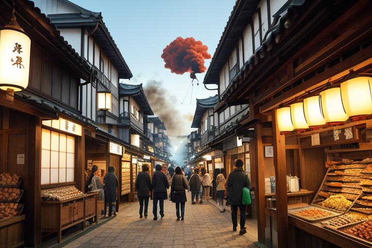
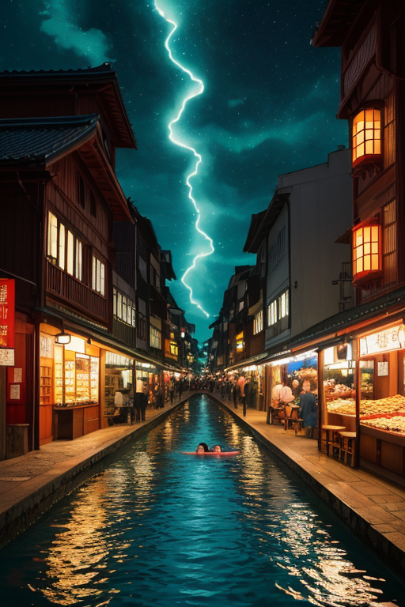
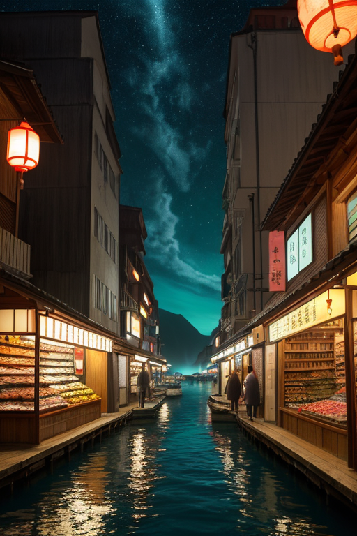

第一章 現実の高知
あなたはまだ気づいていない。この土地にも、王がいることを。
朝の高知城下町は、鰹のたたきを焼く煙と活気に満ちていた。市場には土佐文旦の甘い香りが漂い、酒蔵からは新酒の匂いが漏れる。よさこいのリズムがどこからか聞こえ、金と欲望が人々の往来に混じって流れる。ここは商都線、鰹商圏の心臓だ。自由民権運動が芽吹いたこの地では、自由は商いの活気と同義のように思われていた。誰もが己の船を漕ぎ、己の網を打つ。
その喧噪の只中、ひときわ豪快な笑い声が響く居酒屋があった。常連たちは、あの大柄な女将を「フリダさん」と呼び、海の話に耳を傾ける。彼女は杯を掲げ、「今日の海はな、少し機嫌が悪いぞ」と、誰に言うともなく呟く。その目は、賑わいの奥にある、見えない歪みを捉えていた。人々の自由な営みの下で、列島の歪みは静かに蓄積し、海原は深く唸る。

第二章 歪みの兆候
高知城の石垣は、連日続く観光客の足音に微かに震えていた。坂本龍馬像の前で記念写真を撮る人々の笑い声が、乾いた空気に溶けていく。その活気の裏側で、仁淀川の清流は、ほんのわずかだが濁りを増していた。水量のデータには現れない、水の重さの変化。四万十川の沈下橋を渡る地元の老人が、ふと足を止め、「水の音が、いつもと違う」と呟いた。
港町の活気は加速していた。カツオの初競りは記録的な高値で沸き、夜の飲み屋街はよさこいのリズムに合わせて揺れる。金の流れは人を熱狂させ、自由な成功への欲望が街を覆う。その熱の只中で、奔王コウチリアは居酒屋のカウンターに座り、杯を傾けていた。彼の目には、人々の欲望の奔流そのものが、土地に新たな歪みを生み出していることが見えていた。自由に振る舞う一人ひとりが、無意識に負荷をかけ合う。その集積が、地盤をゆっくりと圧迫する。
「皆、自由を謳歌しているつもりだろう」
彼は呟いた。主席妖精フリダが隣に座り、大きな掌で湯呑みを握る。
「それが悪いわけじゃない。だがな、王よ」
「ああ。ただ、自由は往々にして、他者への配慮を忘れさせる。結果、誰もが孤独に己の道を進むことになる」
杯の底に残った酒が、かすかに、規則的ではない揺れを見せた。室戸岬沖の深層流に、ほんの少しの乱れが生じ始めていた。
第三章 王の葛藤
室戸岬の断崖で、奔王は深く息を吸った。潮風は自由そのものの味がした。彼の掌から微かな青い光が漏れ、岬沖の深層流の乱れを、ごくわずかになだめていた。調整はいつもこうだ。完全な制御ではなく、ほんの一呼吸の猶予を与えるだけだ。
「王よ、また酒か」
フリダが大きな文旦を抱えて現れた。彼女の笑顔はいつも豪快だが、今、その目には王と同じ憂いが浮かんでいた。自由を愛する者たちが、その自由ゆえに互いを見失い、無意識に歪みを生み出している。坂本龍馬が夢見た自由な世は、果たしてこの孤独の集積だったのか。
「自由とは、他者との間に流れる川のようなものだ」
奔王は呟く。
「だが今、人々はそれぞれが孤島となり、川は淀み始めている」
彼は己の役目を思い出す。感情を持たぬ存在であるはずが、この土地の情熱に染まり、葛藤を覚えるようになった。守るべきは、この地の自由そのものか。それとも、自由がもたらす孤独から人々を守ることか。酒を一気に飲み干し、彼は決断した。調整者は、答えを出さない。ただ、流れが完全に止まらぬよう、微かに手を添えるだけだ。

第四章 妖精との対話
桂浜の波は、今日も規則正しく岩を打つ。その音は、遠く室戸岬から四万十川を遡り、高知城下の喧騒まで、この国を流れる金と人のリズムそのものだった。
「商いとはな、奔王よ」
港の倉庫の影で、カツオラが言った。彼の手には、干された鰹節が握られていた。
「モノが動き、金が動き、人の想いが動く。その全てが海流さ。止めりゃ澱む」
フリダは大きな酒樽に腰かけ、頷く。
「自由に泳げ、ってこった。だがな、泳ぐ者は皆、独りだ。群れていても、結局は己の鰭で掻く」
彼らは見ていた。活気ある市場の片隅で、取り残された小さな店。よさこいの鳴子の音が響く祭りの夜、誰とも手を繋がない老人の背中。自由は確かにここにある。だがその広がりが、時に人を互いから遠ざける。
奔王は黙って聞く。妖精たちの言葉は、この土地の本質をそのまま映す。彼は調整者だ。自由という海原が完全に凍結せぬよう、ほんの少し、流れに風を送るだけだ。孤独を消すことは、自由を殺すことに等しいから。
第五章 微調整と余韻
桂浜の波は、今日も変わらず岩を打つ。奔王は岬の先端に立ち、目を閉じる。彼の感覚は、この県を流れるすべての「流れ」と重なる。人の流れ、金の流れ、海流、そして清流。彼は感情を持たぬ存在として送り込まれた。しかし、土佐の酒のように熱く、文旦の香りのようにどこか懐かしいこの土地の「情」が、彼の内側にゆっくりと染み込んでいた。
彼は手を動かす。見えない糸を引くように。四万十川を下る観光筏の進路を、ほんの数度修正する。それは、対岸の木陰で一人佇む老人の姿が、筏の客たちの目にほんの一瞬、留まるためだ。高知城の石段で足を滑らせそうになった学生を、吹き抜ける風がわずかに支える。その学生は転ばず、ふと視線を上げて、同じクラスの無口な同級生と目が合う。室戸岬沖を北上する黒潮の分岐を、妖精たちが微かに補正する。それは、港町の小さな鰹節工場が、明日もかすかな潮風を感じながら扉を開けられるためだ。
彼は何も創らない。消さない。ただ、偶然の糸をほんの少し整えるだけ。自由がもたらす広大な孤独の海で、誰かが誰かの存在に、かすかに気づく瞬間を。それは救済ではない。ただの、微調整だ。
あなたの町にも、王がいる。